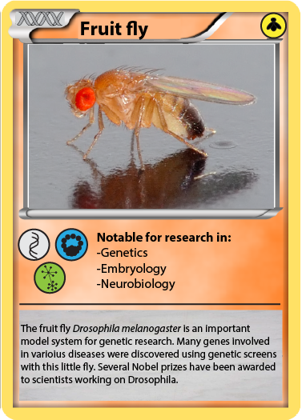
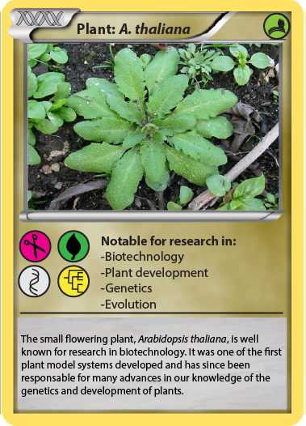
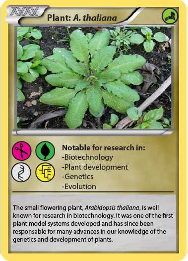

PokeModels is an open access education outreach initiative created by Jake Warner, Aurelien Doucet and Karine Nedoncelle



 

| Credits: |
Pokemodels was developed as a joint project between Jacob Warner, Aurelien Doucet, and Karine Nedoncelle for the 2016 fete de la science. Nematostella image is reproduced with permission from KahiKai.org. All images are public domain from wiki commons Silhouettes for reverse side are public domain images from PhyloPic.org Blank cardfront templates were adapted with permission from deviantart user: LevelInfinitum |
| License Information: |
This project is available here under a Attribution-NonCommercial-ShareAlike 4.0 International (CC BY-NC-SA 4.0). You are free to: Copy and redistribute the material in any medium or format Remix, transform, and build upon the material. Under the following terms: You must give appropriate credit, provide a link to the license, and indicate if changes were made. You may do so in any reasonable manner, but not in any way that suggests the licensor endorses you or your use. You may not use the material for commercial purposes. If you remix, transform, or build upon the material, you must distribute your contributions under the same license as the original. |
 Contact
Contact 
Website has been optimized for